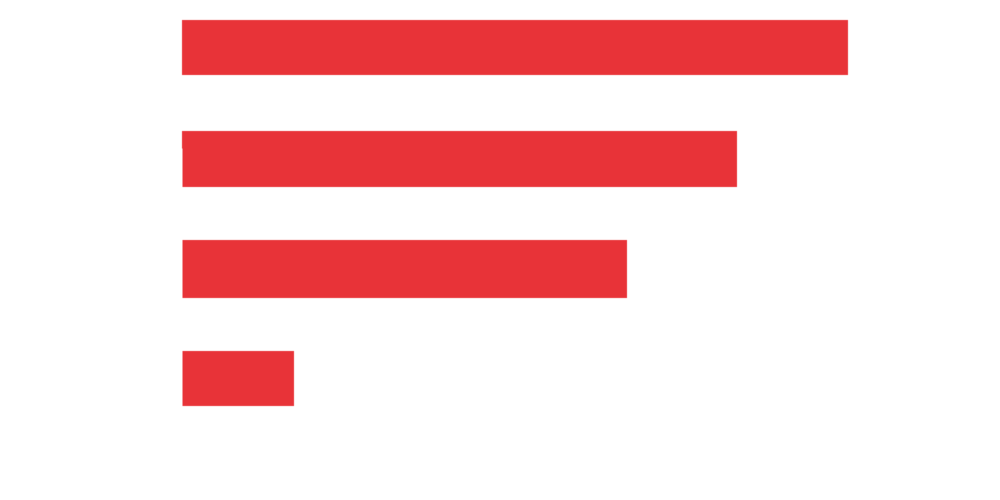

Über mich

Hallo, ich binTobias.
Ich liebe es an genialer Software zu arbeiten. Ich habe Websites, Desktop Anwendungen und sogar Android Apps entwickelt! Wenn Sie eine Auswahl meiner Lieblingsprojekte sehen möchten, können Sie diese in meinem Portfolio weiter unten finden. Die meisten Projekte haben auch ein Repository auf Github, schauen Sie dort auch gerne vorbei!
Sie haben eine offene Stelle (am besten als Werkstudent) oder wollen sich einfach mal mit mir unterhalten? Nehmen Sie einfach über einen der unten verlinkten Social Media Kanäle Kontakt zu mir auf.
Ich liebe es an genialer Software zu arbeiten. Ich habe Websites, Desktop Anwendungen und sogar Android Apps entwickelt! Wenn Sie eine Auswahl meiner Lieblingsprojekte sehen möchten, können Sie diese in meinem Portfolio weiter unten finden. Die meisten Projekte haben auch ein Repository auf Github, schauen Sie dort auch gerne vorbei!
Sie haben eine offene Stelle (am besten als Werkstudent) oder wollen sich einfach mal mit mir unterhalten? Nehmen Sie einfach über einen der unten verlinkten Social Media Kanäle Kontakt zu mir auf.
Persönliche Interessen
Wenn ich gerade nicht an einem Projekt arbeite, verbringe ich meine Zeit gerne mit den folgenden Dingen:
Wenn ich gerade nicht an einem Projekt arbeite, verbringe ich meine Zeit gerne mit den folgenden Dingen:
- Neue Sprachen lernen (im Moment Russisch)
- Klavier spielen (bereits seit 14 Jahren)
- Grafikdesign
- Und neue Leute treffen
Fähigkeiten
Ich habe bereits mit einigen Programmiersprachen gearbeitet, bevorzuge aber Python. Andere Sprachen mit denen ich gut zurechtkomme sind Java für Desktop / Android Apps und HTML/CSS/JS zum Gestalten von Websites.
Außerdem habe ich bereits einige Male Django zum Programmieren von Webanwendungen mit Python genutzt. Eine Liste der Frameworks, die ich oft benutze, können Sie unten finden.
Python
HTML/CSS
Java
Javascript
Oft genutzte...
- ...Frameworks
- Django
- Tensorflow
- Keras
- Numpy und Pandas
- Bootstrap
- ...Software
- Windows und Linux
- Git
- Visual Studio und Jetbrains IDEs
- Databases (PostgreSQL / SQLite)
Ich spreche desweiteren mehrere Sprachen:

Zertifikate / Kurse (klicken für hochauflösendes PDF)
Erfahrung
Mitarbeiter Services und Support
Powershell ■ Microsoft Exchange Server ■ Microsoft Active Directory
Ich schrieb ein Powershell-Skript für die hochflexible Auswertung von Microsoft Active Directories und Microsoft Exchange Serverclustern zur effizienten automatischen Aufbereitung rechnungsrelevanter Daten. Ausserdem war ich federführend bei der Planung und Implementierung des internen Projektes „Einführung eines Mobile Device Managements für hns".
Zeitraum: Mai 2018 - September 2018
Praktikant Services und Support
Anwendungsentwicklung ■ C# ■ UWP ■ KNX
Meine Aufgaben waren unter Anderem die Optimierung der Programmierung des KNX-Büroservers, sowie die Entwicklung einer Bewerber-Management-App (inkl. Verschlüsselung, 2-Faktor-Authentifizierung und EU DS-GVO-Konformität). Desweiteren war ich für die Konzeption, Planung und Begleitung eines Standes auf einer Messe der IHK Berlin zuständig.
Zeitraum: Februar 2018 - April 2018
Ausbildung
Technische Universität Dresden
Bachelor of Science ■ Intformatik
Ich studiere Informatik an der Technischen Universität Dresden. Der Bachelor-Studiengang Informatik umfasst die für die Berufspraxis notwendigen theoretischen und praktischen Fachkenntnisse auf dem Gebiet des Software-Engineering, der Medienerfassung und -bearbeitung, der Informationsverwaltung sowie intelligenter und verteilter komplexer Systeme, inklusive ihrer technischen Grundlagen.
Abschluss vorraussichtlich: 2021
Staatliches Gymnasium "Friedrich Schiller"
Abitur
Die Lehrveranstaltungen in der Oberstufe umfassten Deutsch, Mathematik, Informatik, Biologie, DG, Geschichte, Französisch, Englisch and Russisch.
Abschluss: 2017
Abiturnote: 1,6